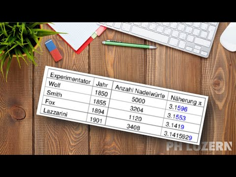

Aufgabe 4.2
Das beste Resultat wurde von Lazzarini erzielt. Es sollte uns skeptisch stimmen. Warum?
- Überlegen Sie, wie wahrscheinlich es ist, zufällig ein so genaues Ergebnis zu erhalten
- Berechnen Sie, wie sich ein weiterer Wurf auf das Ergebnis auswirken würde
- Denken Sie über mögliche Manipulationen nach
- Betrachten Sie die Anzahl der Würfe kritisch
Das verdächtige Ergebnis:
Lazzarini hat mit seinem Experiment eine Näherung von $\pi \approx 3.1415929$ erzielt - das ist auf 6 Nachkommastellen genau!
Mathematische Analyse:
Beim Buffonschen Nadelproblem ist die Schätzung für $\pi$ gegeben durch: $$\pi \approx \frac{2}{h_n} = \frac{2}{k/n} = \frac{2n}{k}$$
wobei $n$ die Anzahl der Würfe und $k$ die Anzahl der Treffer ist.
Was passiert bei einem weiteren Wurf?
Angenommen, Lazzarini macht einen weiteren Wurf, der die Linie nicht trifft:
- Vorher: $n = 3408$ Würfe, $k$ Treffer, $\pi \approx 3.1415929$
- Nachher: $n = 3409$ Würfe, $k$ Treffer (unverändert)
- Neue Schätzung: $\pi_{\text{neu}} = \frac{2 \cdot 3409}{k} = \frac{2 \cdot 3408}{k} \cdot \frac{3409}{3408}$
Die relative Änderung beträgt: $$\pi_{\text{neu}} = 3.1415929 \cdot \frac{3409}{3408} = 3.1415929 \cdot 1.000293 \approx 3.14251$$
Formal: $$\pi \approx \frac{2(n+1)}{k} = \frac{2n}{k} + \frac{2}{k} = \frac{2n}{k} + \frac{2n}{k} \cdot \frac{1}{n} = 3.1415929 + \frac{3.1415929}{3408} \approx 3.14251$$
Warum ist das verdächtig?
Ein einziger zusätzlicher Wurf würde die Genauigkeit von 6 auf etwa 3 Nachkommastellen reduzieren! Das zeigt:
- Das Ergebnis ist extrem empfindlich - ein Wurf mehr oder weniger macht einen grossen Unterschied
- Die Wahrscheinlichkeit, zufällig genau bei diesem perfekten Wert aufzuhören, ist verschwindend gering
- Es sieht danach aus, als hätte Lazzarini das Experiment fortgeführt, bis er ein besonders gutes Ergebnis hatte, und dann strategisch aufgehört
Fazit:
Lazzarini hat vermutlich nicht objektiv experimentiert. Er hat wahrscheinlich während des Experiments mitgerechnet und genau dann aufgehört, als das Ergebnis besonders gut war. Das ist ein typisches Beispiel dafür, wie man durch gezieltes Auswählen von Daten scheinbar beeindruckende, aber wissenschaftlich wertlose Ergebnisse erzielen kann.

Im Video: Etappe 2 · Beispiele bei 6:25